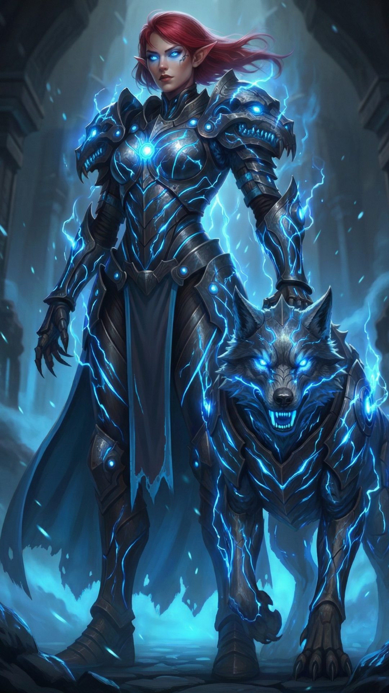
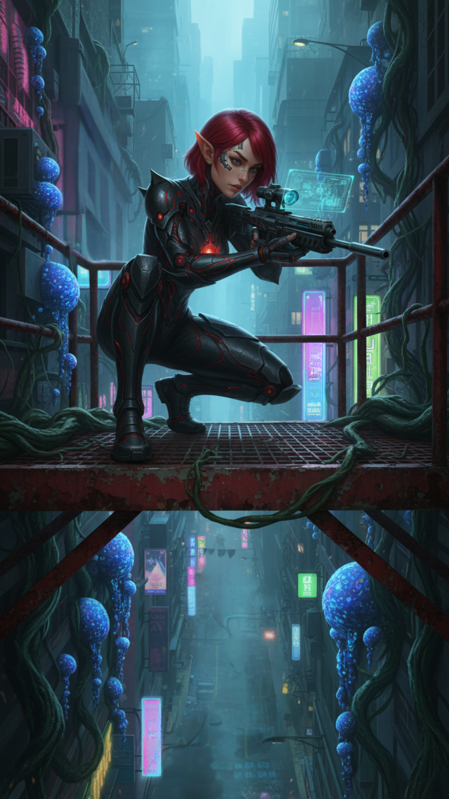
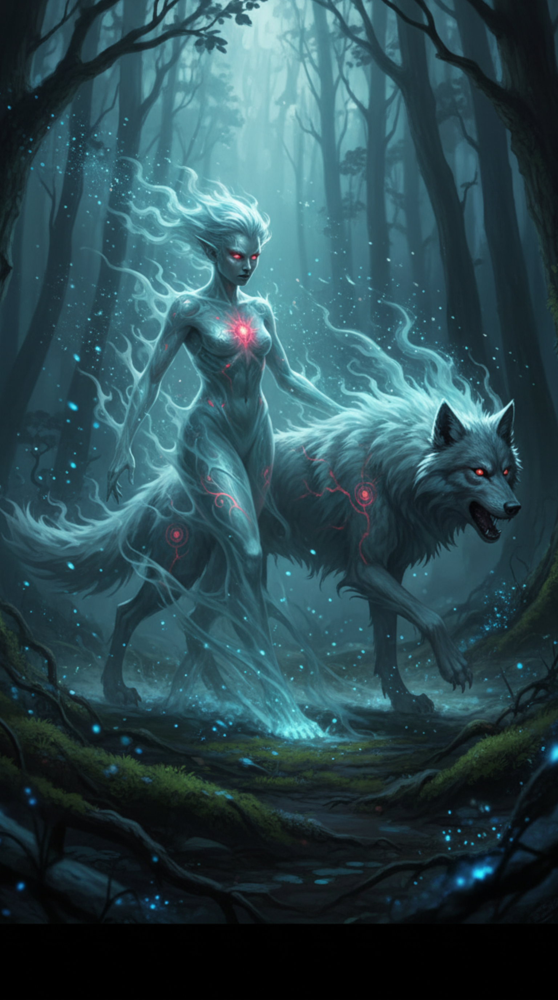

Zara
Summary
A Duskkin hunter whose journey from human-bloodlust to becoming MI6's most valuable Duskkin ally embodies the painful transformation that followed The Merging
Description
Zara's story is written in blood and redemption. She was just a child when The Merging tore reality apart, forcing humans, fairies, demons, Duskkin, and countless other beings who knew each other only through myth and legend, to suddenly coexist in the same world. For Zara, coexistence meant loss.
Background
The chaotic violence of those early days claimed most of her family, their deaths seared into her young mind like brands. When an uneasy peace finally settled over the fractured world, the wounds remained raw. Zara, a little older but no less broken, channelled her grief into rage. Human bloodlust consumed her—an addiction so powerful, so all-consuming, that she became the youngest Duskkin in history to be imprisoned in Max. While other Duskkin children learned the sacred ways of the hunt, Zara learned the cold reality of iron bars and the weight of her own fury. It was there that Eirik found her. An elder Duskkin and old friend of her family, he saw not a monster but a child drowning in trauma. He became her mentor, her anchor, teaching her the true ways of the Duskkin hunt. His words became her mantra, repeated during the darkest hours: 'Mythical creature blood grants great power... Human blood comes with nothing but addiction.' The teaching was more than practical wisdom—it was a lifeline.
Personality
Duskkin live far longer than humans, and Zara had time. Time to sit with her anger. Time to examine the events that shattered her world. Time to understand that when races who existed only in each other's nightmares and fairy tales suddenly share the same streets, the same cities, the same reality... war becomes an inevitable consequence of fear meeting fear. This understanding didn't erase her pain, but it transformed it. Slowly, painfully, Zara rebuilt herself. She mastered the hunt under Eirik's guidance, becoming one of the most skilled trackers in the Urban Jungle. Her knowledge of Duskkin territory became encyclopedic—she knew which alleys the Prowlers favoured, where Iron Bloom Behemoths nested, which creatures left what marks on the techno-organic architecture. More importantly, she learned to channel her intensity into purpose rather than rage.
Role in the story
Her personality remained blunt, direct, unpolished by social niceties—trauma doesn't sand away all rough edges, and Zara never pretended otherwise. But beneath that gruff exterior lay something unexpected: a fierce determination to prevent others from suffering as she had. When Zara first approached MI6 offering assistance, they were skeptical. A Duskkin with a history of human bloodlust, volunteering to work with human agents? It reeked of trap or madness. But Zara proved herself mission after mission. Her knowledge of the Urban Jungle and its creatures became invaluable—she could track Shadow Beasts through dimensional folds, identify mythical creature blood potency by scent alone, and navigate the shifting territories of Duskkin clans with an ease no human could match. She became MI6's go-to expert for any operation involving Duskkin territory or mythical creatures. Agents learned to trust her blunt assessments and unflinching honesty. If Zara said a creature was too dangerous to engage, you didn't engage.
Relationships
If she said a route was clear, it was clear. Her word became as reliable as any technology MI6 possessed. Recently, the agency extended an offer that surprised even her: a formal teaching position, training new Duskkin recruits who join MI6. It would mean leaving the hunt, trading the neon-lit streets of the Urban Jungle for classrooms and training facilities. It would mean shaping the next generation, ensuring young Duskkin understand both their power and their responsibility. Zara is still thinking about it. Part of her knows it's the logical next step—her knowledge is too valuable to remain in the field forever, and her story of redemption could inspire others struggling with the same bloodlust that nearly destroyed her. But another part, the part that was forged in the hunt under Eirik's patient guidance, isn't ready to leave the only place that ever felt like home. The Urban Jungle saved her. The question is whether she's ready to save others in a different way.
Affiliation
Duskkin / MI6 Ally
Abilities
- Master Hunter (Urban Jungle Expert)
- Mythical Creature Tracking
- Blood Potency Assessment
- Sanguine Forging
- Dimensional Navigation
- Combat Expertise
- Duskkin Territory Knowledge
- Shadow Beast Recognition
- Cybernetic Integration (Standard Duskkin)
Gallery




